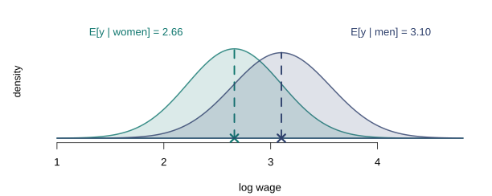

Conditional Expectation, Linear Projection, and the Linear Regression Model
Lecture 2
1 Before any model
Where this lecture sits
DGPIdentificationEstimationAsymptoticsInference
Computation
This lecture answers the first of the three questions, and only that one. By the end we will know under exactly what conditions the parameter of a linear model can be learned from data — and we will not have written down a single estimator. Estimation is Lecture 3; inference waits until Lecture 6.
That separation is deliberate and will be repeated all semester. Identification is a property of the population and the model; it is settled before any data are collected, and no estimator can repair its failure.
The question of this lecture
We observe a sample and want to say something about the relationship between \(y\) and \(\mathbf{x}\). The instinct is to write down a model. Resist it for a moment, and ask instead: what can be said before assuming anything at all?
What is the DGP?
\(\{(y_i, \mathbf{x}_i)\}_{i=1}^n\) are i.i.d. draws from a population distribution \(F\), with \(y_i\) scalar and \(\mathbf{x}_i\) a \(K \times 1\) vector.
That is the entire assumption. No linearity, no exogeneity, no functional form.
Two objects, and why the order matters
It turns out that a joint distribution alone gives us two well-defined objects: the conditional expectation function, which describes the average of \(y\) at each value of \(\mathbf{x}\), and the linear projection, which is the best straight-line summary of that relationship. Neither requires a model. Both exist as soon as a few moments are finite.
Only afterwards do we impose the linear regression model — and the model turns out to be precisely the assumption that these two objects coincide.
Most treatments run the other way, opening with the assumptions A1–A6 and inviting the belief that linearity is where econometrics begins. Taking the population objects first costs one extra section and repays it many times over: when exogeneity fails in Lecture 10, the student already knows what survives, because they know what was definitional and what was assumed.
2 The conditional expectation function
What we actually want to know
A model builder is rarely interested in the joint distribution of \(y\) and \(\mathbf{x}\) as such. The interest is conditional: how do earnings differ between groups, and how do they change with schooling? Start with the simplest possible conditioning variable — a single binary indicator — because everything essential is already visible there.
Two distributions, two means. The CEF is not a curve here — with a binary regressor it is just two numbers, one per group. That is worth seeing before the notation arrives, because the notation makes it look like something more exotic than it is.
The definition
Definition 1 (Conditional expectation function) The conditional expectation function (CEF) is \[m(\mathbf{x}) = \E[y \mid \mathbf{x}],\] the mean of \(y\) in the subpopulation with covariates equal to \(\mathbf{x}\). It exists whenever \(\E|y| < \infty\), and involves no modelling assumption whatever.
With one binary regressor, \(m\) takes two values. With two binary regressors it takes four. As the conditioning becomes finer the CEF becomes a richer object — and with a continuous regressor it becomes a curve.
More groups, same idea

The law of iterated expectations, read off the figure
The dashed line is the unconditional mean, and it is not the average of the four bars. It is their average weighted by the group shares:
\[\E[y] \;=\; \sum_{g} \Prob(\text{group } g)\; \E[y \mid \text{group } g]\]
which is exactly the law of iterated expectations, \(\E[y] = \E\big[\E[y \mid \mathbf{x}]\big]\). The outer expectation averages the group means over the distribution of the groups.
The CEF error
Whatever \(m\) is, we can define the deviation of \(y\) from it: write \(\varepsilon = y - m(\mathbf{x})\), so that \(y = m(\mathbf{x}) + \varepsilon\).
Theorem 1 (Properties of the CEF error)
- \(\E[\varepsilon \mid \mathbf{x}] = 0\)
- \(\E[\varepsilon] = 0\)
- \(\E[h(\mathbf{x})\,\varepsilon] = 0\) for any \(h\) with \(\E|h(\mathbf{x})\varepsilon| < \infty\)
Proof.
- holds because \(m(\mathbf{x})\) is a function of \(\mathbf{x}\), so it passes through the conditional expectation. (2) is (1) plus the law of iterated expectations. (3) follows by conditioning on \(\mathbf{x}\) first, which reduces the expression to \(\E[h(\mathbf{x}) \cdot 0]\). \(\square\)
Nothing here has been assumed
Read the theorem again and notice what it is not. The equation \(y = m(\mathbf{x}) + \varepsilon\) with \(\E[\varepsilon \mid \mathbf{x}] = 0\) holds by construction, for any joint distribution with a finite mean. It has no empirical content: nothing has been assumed, and consequently nothing can be tested.
This matters because the same equation reappears later as the linear regression model, where it does carry content. The difference will be whether \(m(\mathbf{x})\) is left unrestricted or required to be linear.
Confusing “the error has conditional mean zero by construction” with “the error has conditional mean zero by assumption” is exactly what makes the exogeneity assumption look either vacuous or mysterious. It is neither.
Why the mean, and not something else?
Among all functions of \(\mathbf{x}\), the CEF predicts \(y\) best under squared loss.
Theorem 2 (The CEF minimises mean squared error) Among all \(g\) with \(\E[g(\mathbf{x})^2] < \infty\), \[m(\mathbf{x}) = \argmin_{g} \E\big[(y - g(\mathbf{x}))^2\big].\]
Proof. Add and subtract \(m(\mathbf{x})\) inside the square. The cross term vanishes by Theorem 1(3), since \(m - g\) is a function of \(\mathbf{x}\), leaving \[\E\big[(y - g(\mathbf{x}))^2\big] = \E[\varepsilon^2] + \E\big[(m(\mathbf{x}) - g(\mathbf{x}))^2\big] \ge \E[\varepsilon^2],\] with equality only when \(g\) and \(m\) agree as functions of \(\mathbf{x}\). \(\square\)
Strictly, \(g\) and \(m\) need only agree with probability one: they may differ on a set of \(\mathbf{x}\) values that never occurs, which is what “almost surely” means when it appears in this kind of statement. Nothing in this course turns on the distinction.
3 Conditional variance
The mean is not the only thing that moves
The CEF records the centre of each conditional distribution and discards everything else. Some of what it discards matters.

Naming what the CEF leaves out
What the figure shows is dispersion in \(y\) within each group. That is the object to name, and we name it on \(y\) — the same variable the CEF was about.
Definition 2 (Conditional variance) The conditional variance of \(y\) given \(\mathbf{x}\) is \[\sigma^2(\mathbf{x}) \;=\; \Var[y \mid \mathbf{x}] \;=\; \E\big[(y - m(\mathbf{x}))^2 \bigm| \mathbf{x}\big].\]
The same object, read on the error
The bracket in Definition 2 is \(\varepsilon^2\), since \(\varepsilon = y - m(\mathbf{x})\). So the conditional variance can be written three ways:
\[\sigma^2(\mathbf{x}) \;=\; \Var[y \mid \mathbf{x}] \;=\; \Var[\varepsilon \mid \mathbf{x}] \;=\; \E[\varepsilon^2 \mid \mathbf{x}].\]
Each equality earns a sentence. Given \(\mathbf{x}\), the number \(m(\mathbf{x})\) is fixed, and subtracting a fixed number shifts a distribution without changing its spread — so the conditional variance of \(y\) and of its error are the same function, not two related ones. The last equality then holds because \(\E[\varepsilon \mid \mathbf{x}] = 0\) by construction, which is what removes the squared-mean term from the variance.
There is therefore one object here rather than two: the dispersion of wages within a group and the dispersion of the error in that group are the same number. We will usually write it on the error, because that is the form the variance formulas of Lecture 4 need.
Conditional and unconditional are different objects
The unconditional variance \(\sigma^2 = \E[\varepsilon^2]\) is a single number. The conditional variance \(\sigma^2(\mathbf{x})\) is a function. They are linked, again, by iterated expectations:
\[\sigma^2 \;=\; \E\big[\sigma^2(\mathbf{x})\big]\]
so the unconditional variance is the average of the conditional ones. Knowing \(\sigma^2\) tells you nothing about how the spread varies across groups — exactly as knowing \(\E[y]\) told you nothing about the four group means.
Definition 3 (Homoskedasticity and heteroskedasticity) The conditional variance is homoskedastic if \(\sigma^2(\mathbf{x}) = \sigma^2\) does not depend on \(\mathbf{x}\), and heteroskedastic otherwise.
Which case is the exception?
Important
Textbooks often present homoskedasticity as part of a correct specification and heteroskedasticity as a deviation from it. That is backwards.
Heteroskedasticity is the generic case; homoskedasticity is unusual and exceptional. The default in empirical work should be to assume the errors are heteroskedastic, not the converse.
The point is Hansen’s, and it is worth taking seriously because it has consequences for how the rest of the course is arranged. There is no economic reason to expect the dispersion of wages to be identical for every level of schooling, or the volatility of firm growth to be identical at every firm size. Constant variance is a coincidence, and coincidences should not be the default.
Accordingly: in Lecture 4 the variance of least squares is derived under general heteroskedasticity and the constant-variance formula appears as the special case it is. Robust standard errors are the default, not a repair.
4 When the CEF is linear
The convenient special case
We have a target, \(m(\mathbf{x})\), and no way to estimate a whole function. The obvious question is when \(m\) happens to be simple enough to estimate.
Definition 4 (Linear CEF) The CEF is linear if \[m(\mathbf{x}) = \E[y \mid \mathbf{x}] = \mathbf{x}'\bbeta\] for some \(K\)-vector \(\bbeta\), where \(\mathbf{x}\) ordinarily includes a constant.
When this holds, the object we wanted is described by \(K\) numbers, and estimating it becomes feasible. Everything the rest of the course does to the linear model rests on this being either true or a good enough approximation.
Linearity is less restrictive than it looks
It is tempting to dismiss a linear CEF as implausible. Two observations blunt that objection.
With discrete regressors it is not an assumption at all. Take the four groups of Figure 2 and include a constant plus three dummies. Four parameters, four group means: the linear CEF fits them exactly, whatever the numbers happen to be. A saturated regression on dummies is always a linear CEF.
Linear in parameters, not in variables. \(\mathbf{x}\) may contain \(x^2\), \(\log x\), interactions or splines. Writing \(m(x) = \beta_1 + \beta_2 x + \beta_3 x^2\) is a linear CEF in a nonlinear function of \(x\) — and by adding terms one can approximate a curve as closely as desired.
And when it is not linear?
Nothing guarantees the CEF is linear, and with continuous regressors it usually is not. Two responses are available.
One is to estimate \(m\) without restricting its shape. That is nonparametric regression, it works, and it needs far more data than economics usually has — the reason being precisely the infinite-dimensional minimisation of Theorem 2.
The other is to keep the linear form and ask what, exactly, we get: if we insist on a linear function anyway, which one do we get, and does it mean anything? That object occupies the rest of this lecture.
5 Linear projection
The best linear approximation
We give up on describing \(m\) exactly. Instead of the best predictor among all functions of \(\mathbf{x}\), ask for the best predictor among the linear ones — the coefficient vector that makes \(\mathbf{x}'\mathbf{c}\) as close to \(y\) as possible, under the same squared loss.
Minimising over \(K\) numbers instead of a function
Definition 5 (Linear projection) Suppose \(\E[y^2] < \infty\), \(\E\|\mathbf{x}\|^2 < \infty\), and \(\bQ_{xx} = \E[\mathbf{x}\mathbf{x}']\) is nonsingular. The linear projection coefficient is \[\bbeta = \argmin_{\mathbf{c}\,\in\,\mathbb{R}^K} S(\mathbf{c}), \qquad S(\mathbf{c}) = \E\big[(y - \mathbf{x}'\mathbf{c})^2\big],\] and the linear projection of \(y\) on \(\mathbf{x}\) is \(\mathbf{x}'\bbeta\).
Here \(\mathbf{c}\) ranges over candidate coefficient vectors and \(\bbeta\) is the one that wins. Both are features of the distribution \(F\): no data appears anywhere in Definition 5, and none will until Lecture 3.
Compare with Theorem 2. There the minimisation ran over functions \(g\); here it runs over the \(K\) numbers collected in \(\mathbf{c}\). That single change is what turns an infinite-dimensional problem into one with a closed-form answer.
The pieces, and their dimensions
Before minimising anything, it is worth writing out what the symbols hold. With \(K\) regressors,
\[\underset{K \times 1}{\mathbf{x}} = \begin{pmatrix} x_1 \\ x_2 \\ \vdots \\ x_K \end{pmatrix}, \qquad \underset{K \times 1}{\mathbf{c}} = \begin{pmatrix} c_1 \\ c_2 \\ \vdots \\ c_K \end{pmatrix}, \qquad \mathbf{x}'\mathbf{c} = \sum_{k=1}^{K} x_k c_k \quad (1 \times 1),\]
so \(S(\mathbf{c})\) is a scalar-valued function of \(K\) arguments: a single number, obtained from \(K\) inputs.
The two moments that will appear
\[\underset{K \times K}{\bQ_{xx}} = \begin{pmatrix} \E[x_1^2] & \E[x_1x_2] & \cdots & \E[x_1x_K] \\ \E[x_2x_1] & \E[x_2^2] & \cdots & \E[x_2x_K] \\ \vdots & \vdots & \ddots & \vdots \\ \E[x_Kx_1] & \E[x_Kx_2] & \cdots & \E[x_K^2] \end{pmatrix}, \qquad \underset{K \times 1}{\E[\mathbf{x}y]} = \begin{pmatrix} \E[x_1y] \\ \E[x_2y] \\ \vdots \\ \E[x_Ky] \end{pmatrix}.\]
\(\bQ_{xx}\) is symmetric, because \(\E[x_jx_k] = \E[x_kx_j]\). Keep these shapes in view: the first-order condition below is a \(K \times 1\) vector equation — \(K\) equations in the \(K\) unknowns \(c_1,\dots,c_K\) — and “\(\bQ_{xx}\) nonsingular” is exactly the condition under which that system has one solution rather than none or infinitely many.
The simplest case, written out
With a constant and one regressor, \(\mathbf{x} = (1, x_2)'\), the two objects are small enough to invert by hand:
\[\bQ_{xx} = \begin{pmatrix} 1 & \E[x_2] \\ \E[x_2] & \E[x_2^2] \end{pmatrix}, \qquad \E[\mathbf{x}y] = \begin{pmatrix} \E[y] \\ \E[x_2y] \end{pmatrix},\]
and carrying out \(\bQ_{xx}^{-1}\E[\mathbf{x}y]\) gives
\[\beta_2 = \frac{\E[x_2y] - \E[x_2]\,\E[y]}{\E[x_2^2] - \E[x_2]^2} = \frac{\Cov(x_2,y)}{\Var(x_2)}, \qquad \beta_1 = \E[y] - \beta_2\,\E[x_2].\]
This is the slope of the population regression line, in the form every introductory course states it. And notice what nonsingularity of \(\bQ_{xx}\) amounts to in this case: its determinant is \(\Var(x_2)\), so the condition is simply that the regressor varies.
The closed form
Theorem 3 (The projection coefficient) Under the conditions of Definition 5, \[\bbeta = \bQ_{xx}^{-1}\,\E[\mathbf{x}y].\]
Proof. Expanding the square and taking expectations, \(S(\mathbf{c}) = \E[y^2] - 2\,\mathbf{c}'\E[\mathbf{x}y] + \mathbf{c}'\bQ_{xx}\mathbf{c}\), a quadratic form in \(\mathbf{c}\). Its first-order condition is \[\frac{\partial S}{\partial \mathbf{c}} = -2\,\E[\mathbf{x}y] + 2\,\bQ_{xx}\mathbf{c} = \bzero,\] which has the unique solution \(\bQ_{xx}^{-1}\E[\mathbf{x}y]\) because \(\bQ_{xx}\) is nonsingular, and is a minimum because the Hessian \(2\bQ_{xx}\) is positive definite. \(\square\)
What the formula buys
Definition 5 describes \(\bbeta\) implicitly — whichever vector minimises \(S\) — and an implicit description carries no guarantee that the object exists or is unique. Theorem 3 converts it into an explicit one: \(\bbeta\) is a function of two population moments. Three things follow from reading that function, and they are the reason the projection is worth defining at all.
It exists under almost nothing. The formula needs two finite moments and an invertible \(\bQ_{xx}\). It does not need the CEF to be linear. It does not need a “true model”, or a correctly specified one — there is no model in Definition 5 to be right or wrong about.
It is unique. Nonsingularity makes \(\bQ_{xx}\bbeta = \E[\mathbf{x}y]\) a system with exactly one solution. This condition returns at the end of the lecture, wearing the name identification.
It is pinned down by the distribution. Two moments of \(F\) determine \(\bbeta\) completely — which is what will let us say, once data appears, that we are learning about something well defined.
The projection error
Define the projection error \(e = y - \mathbf{x}'\bbeta\), so that
\[y = \mathbf{x}'\bbeta + e\]
holds by construction — exactly as \(y = m(\mathbf{x}) + \varepsilon\) did. Rewriting the first-order condition of Theorem 3 in terms of \(e\),
\[\E[\mathbf{x}e] = \bzero,\]
which is \(K\) equations saying that the error is uncorrelated with every regressor. This is not an assumption about the world; it is what minimising \(S\) means.
The two errors, compared
We now have two decompositions of the same \(y\):
\[y = m(\mathbf{x}) + \varepsilon \qquad\text{and}\qquad y = \mathbf{x}'\bbeta + e.\]
The left-hand sides agree, so the right-hand sides must too. Solving for \(e\):
\[e \;=\; \varepsilon \;+\; \underbrace{\big[\,m(\mathbf{x}) - \mathbf{x}'\bbeta\,\big]}_{\text{approximation error}}\]
The projection error is the CEF error plus the amount by which the best line misses the CEF. Two things follow, and together they are the whole content of the comparison.
What follows from that decomposition
The two errors are equal exactly when the CEF is linear. Then the bracket vanishes identically and \(e = \varepsilon\). Otherwise \(e\) carries an extra term — and that term is a function of \(\mathbf{x}\), not noise.
The extra term is what separates the two orthogonality statements. Taking conditional expectations of the decomposition,
\[\E[e \mid \mathbf{x}] \;=\; \underbrace{\E[\varepsilon \mid \mathbf{x}]}_{=\;0} \;+\; m(\mathbf{x}) - \mathbf{x}'\bbeta \;=\; m(\mathbf{x}) - \mathbf{x}'\bbeta.\]
So \(\E[e \mid \mathbf{x}]\) is the approximation error. It vanishes at every \(\mathbf{x}\) only if the CEF is linear, whereas \(\E[\mathbf{x}e] = \bzero\) merely forces certain weighted averages of it to be zero.
Seeing the gap
The true CEF here is quadratic; the projection is the best line through it. The vertical distance between the two curves is the approximation error \(m(x) - \mathbf{x}'\bbeta\).

The same gap, measured two ways
The two panels below use the same data and the same projection error as the figure above.

Why both panels can be true at once
Read them together. On the right, the bin means trace out \(\E[e \mid x]\) — which the previous section showed is the approximation error: negative at both ends, positive in the middle. On the left, the fitted line through the same errors is flat.
There is no contradiction, and the reason is visible: the negative regions and the positive region cancel when averaged over the distribution of \(x\). Orthogonality, \(\E[\mathbf{x}e] = \bzero\), constrains \(K\) such weighted averages to be zero. Conditional mean zero would constrain the curve on the right to be zero at every point. The first is \(K\) restrictions; the second is infinitely many.
A small equation with a long future
Connection—The first moment condition of the course
\(\E[\mathbf{x}e] = \bzero\) is a moment condition — a statement that some function of the data and the parameter has mean zero. Follow it forward:
- Lecture 3 — its sample analogue \(\bX'\be = \bzero\) drops out of least squares algebra
- Lecture 10 — the regressor is replaced by an instrument, giving \(\E[\mathbf{z}e] = \bzero\)
- Lecture 12 — it generalises to \(\E[g(W,\btheta)] = \bzero\), which is GMM
6 The linear regression model
Nothing new from here
It is worth pausing to record how little has been assumed. The CEF exists whenever \(y\) has a mean. The projection exists whenever two moments are finite and \(\bQ_{xx}\) inverts. Both decompositions of \(y\) hold by construction. Nothing in this lecture so far could be contradicted by data.
The linear regression model is the single statement that ties the two objects together:
\[y = \mathbf{x}'\bbeta + \varepsilon, \qquad \E[\varepsilon \mid \mathbf{x}] = 0.\]
Read from one side, it says the CEF is linear — it is Definition 4. Read from the other, it says the approximation error is identically zero, so the projection error and the CEF error are the same variable. One statement, reached from either direction.
Three names for what we already have
The three conditions below are the ones Lectures 3 and 4 refer to by name. None of them is new material: each is something already established, given a label so it can be pointed at individually.
A1 · Linearity
\[m(\mathbf{x}) = \E[y \mid \mathbf{x}] = \mathbf{x}'\bbeta\]
This is Definition 4. Its consequence is the one the lecture has been working towards: the approximation error \(m(\mathbf{x}) - \mathbf{x}'\bbeta\) is identically zero, the projection coefficient and the CEF coefficient are the same vector, and \(\bbeta\) is a derivative of a conditional mean rather than the slope of an approximating line.
Linearity remains in the parameters: \(x^2\), \(\log x\) and interactions are all allowed.
Matrix form and notation
Each observation reads \(y_i = \mathbf{x}_i'\bbeta + \varepsilon_i\), and stacking the \(n\) of them gives the form used for the rest of the course:
\[\underset{n \times 1}{\bY} = \underset{n \times K}{\bX}\;\underset{K \times 1}{\bbeta} + \underset{n \times 1}{\beps}\]
Throughout, boldface \(\mathbf{x}\) denotes a column or a row of \(\bX\); subscript \(k\) indexes columns, meaning variables, and \(i\) indexes rows, meaning observations.
A2 · Full rank, and why it is about identification
\[\bQ_{xx} = \E[\mathbf{x}\mathbf{x}'] \ \text{nonsingular}; \qquad \text{in the sample, } \rank(\bX) = K \ \text{with } n \ge K.\]
This is the condition Definition 5 already required, now named. Its sample counterpart is what makes \(\bX'\bX\) invertible in Lecture 3. It is tempting to read it as a technical convenience that makes a formula work. It is not.
Important
If A2 fails, distinct values of \(\bbeta\) produce identical distributions of the observables. No estimator can tell them apart, at any sample size. This is an identification failure, not a computational one.
What that looks like
Example 1 (An unestimable model) \[\ln \text{Price} = \beta_1 \ln \text{Size} + \beta_2 \ln \text{AspectRatio} + \beta_3 \ln \text{Height} + \varepsilon\]
with \(\text{Size} = W \times H\) and \(\text{AspectRatio} = W/H\). Then \(\ln\text{Size} = \ln W + \ln H\) and \(\ln\text{AspectRatio} = \ln W - \ln H\), so \[\ln\text{Size} - \ln\text{AspectRatio} - 2\ln H = 0\] exactly. The three regressors are collinear, each \(\beta_k\) is meaningless on its own, and only certain linear combinations are identified.
A3 · Exogeneity
\[\E[\varepsilon \mid \mathbf{x}] = 0, \qquad \text{stacked: } \E[\beps \mid \bX] = \bzero.\]
This is the strengthening of \(\E[\mathbf{x}e] = \bzero\) that the comparison of the two errors isolated. The projection always delivers zero correlation; A3 asks for zero conditional mean, which is the same as asking that the approximation error be zero everywhere.
So A1 and A3 are not independent statements — given A1, the error of the linear specification is a CEF error and A3 follows. They are separated only because they fail for different reasons and are repaired by different techniques: a wrong functional form is one problem, an omitted variable is another.
Where exogeneity fails
Example 2 (Omitted variables) Suppose the DGP is \(\text{Income} = \gamma_1 + \gamma_2\,\text{educ} + \gamma_3\,\text{age} + u\) but we estimate \(\text{Income} = \gamma_1 + \gamma_2\,\text{educ} + \varepsilon\).
Then \(\varepsilon = \gamma_3\,\text{age} + u\), so \(\E[\varepsilon \mid \text{educ}] = \gamma_3\,\E[\text{age} \mid \text{educ}] \neq 0\) whenever age and education are related.
A3 fails here, and the failure is not a technicality: it is omitted variable bias, which we derive properly in Lecture 4 and spend Lectures 10 and 11 learning to repair.
What each condition buys
| Restricts | Buys | Revisited in | |
|---|---|---|---|
| A1 Linearity | the shape of \(m(\mathbf{x})\) | \(\bbeta\) is a CEF coefficient | Lectures 13–14 |
| A2 Full rank | \(\bQ_{xx}\) | Identification; \((\bX'\bX)^{-1}\) exists | Lecture 3 |
| A3 Exogeneity | \(\varepsilon\) given \(\mathbf{x}\) | Unbiasedness, consistency | Lectures 10–11 |
The model as stated says nothing about the conditional variance, and nothing about the shape of the conditional distribution. Those are separate restrictions, and they enter later — in Lecture 4, where each is first needed for a result that cannot be had without it.
7 Identification, before estimation
Putting the pieces together
We now have everything needed to answer the first of the three questions from Lecture 1, and notice that we have not yet written down a single estimator.
The parameter \(\bbeta\) is a functional of the population moments, \(\bbeta = \bQ_{xx}^{-1}\E[\mathbf{x}y]\). It is therefore determined by \(F\) alone — provided \(\bQ_{xx}\) can be inverted. A2 delivers exactly that: given A2, no two values of \(\bbeta\) generate the same joint distribution, and the parameter is identified.
Two conditions, two jobs
A3 does a separate job. It makes that identified coefficient the conditional expectation function, rather than merely the best linear approximation to it.
Important
A2 identifies \(\bbeta\). A3 makes \(\bbeta\) the thing we wanted.
Two different jobs, failing for two different reasons, repaired by two different techniques.
Estimation is next lecture — and, as we will see, it is by some distance the easier problem.
8 Reading
Sources
| Hansen (Hansen 2022) | Chapter 2 — the CEF, conditional variance, the linear CEF, and projection |
| Greene (Greene 2018) | Chapter 2 — the two examples used here |
Hansen’s Chapter 2 is the source for the ordering of this lecture: §2.1–2.11 for the CEF and its error, §2.7 for homoskedasticity and heteroskedasticity, §2.15–2.18 for the linear CEF, and §2.19 onward for the projection and its error. Read it before Lecture 3.
9 References
References
Greene, William H. 2018. Econometric Analysis. 8th ed. New York: Pearson.
Hansen, Bruce E. 2022. Econometrics. Princeton, NJ: Princeton University Press.